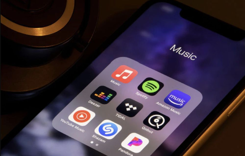

A streaming szolgáltatások olyan online szolgáltatások, amelyek lehetővé
teszik a
felhasználók
számára, hogy
az
interneten keresztül játszanak le jelen esetben zenét, de akár filmeket vagy élő adásokat.
Ehhez
szüksége
van a
felhasználónak internetre, valamilyen okoseszközre.
Számos ilyen
alkalmazás létezik manapság, legtöbbjüknek akkor van értelme, ha előfizetünk. Vannak persze
ingyenes verziók
is
de ott különböző funkciók nem elérhetőek.

Az okoseszközök elengedhetetlenek a mindennapjainkban
Az appok lényege
Szinte az összes ilyen alkalmazásnak az a lényege, hogy a felhasználó zenét
tudjon hallgatni
akár hol van.
Ezeket a
zenéket rendezni tudja lejátszási listákba, és az app a kedvelt és a legtöbbet hallgatott
számokhoz
hasonlókat
ajánljon. Ha éppen nincsen internet, az addig letöltött zenéket is lehessen hallgatni. Mégis
mi
a különbség
akkor az
appok között.
Mik a különbségek az alkalmazások között?
A fő különbség, az az árazás, a zene minősége, az appok
használhatósága és a megtalálható
zenék
száma.
Ezek
mellett van pár érdekes funkció, ami nagyban befolyásolja az emberek döntését a
választáskor.
{kind=link}